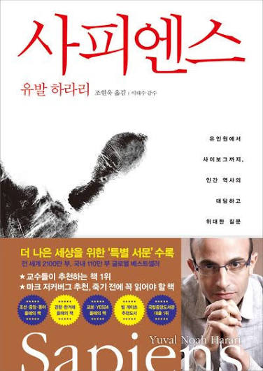

4장으로 제1부 「인지혁명」을 닫고, 5장부터 제2부 「농업혁명」으로 들어갑니다. 하루 한 챕터를 읽고, 그날의 질문 셋에 몇 줄 적어 보세요. 다 채우지 않으셔도 괜찮습니다.
더 많이 거두고 더 크게 뭉친 사피엔스는 그만큼 더 잘 살게 되었을까요?
지난주 3장 끝에서 예고한 이야기다. 사피엔스는 농사를 짓기 훨씬 전부터, 새 땅에 발을 디딜 때마다 그곳의 큰 동물들을 사라지게 했다.
하라리는 사피엔스가 바다를 건너 호주에 닿은 일에서 시작합니다. 그 뒤 몇천 년 사이에 호주의 대형 동물이 거의 다 사라졌습니다. 아메리카 대륙에서도 같은 일이 되풀이되었습니다. 기후 탓이라는 반론을 하나씩 따져 본 뒤, 그는 사피엔스에게 책임이 있다고 말합니다. 그리고 수렵채집인, 농부, 산업 사회로 이어지는 세 번의 멸종 물결을 짚으며 지금 바다에 남은 큰 동물들을 걱정합니다.
“우리가 범인이다. 진실을 외면할 방법은 없다. 설사 기후변화가 우리를 부추겼다 할지라도, 결정적 책임은 인류에게 있다.”
4장에서 내가 밑줄 그은 문장 하나를 옮겨 적고, 왜 거기서 멈추었는지 한 줄 덧붙여 주세요.
하라리는 기후가 아니라 “우리가 범인”이라고 잘라 말합니다. 이 단정에 동의하시나요, 아니면 걸리는 데가 있나요?
내가 오래 머물다 떠나온 자리 하나를 떠올려 주세요. 집, 일터, 모임 어디든 좋습니다. 내가 다녀간 뒤 그곳에서 달라진 것은 무엇이었나요.
농업혁명은 인류 전체의 식량을 늘렸지만, 농부 한 사람의 삶은 수렵채집인보다 고되고 불안해졌다. 사람이 밀을 길들인 것이 아니라 밀이 사람을 길들였다.
하라리는 약 1만 년 전 사람들이 몇몇 동식물을 기르기 시작한 일을 진보로 보는 통념부터 뒤집습니다. 밀을 돌보느라 사람은 허리를 굽히고 한곳에 묶였습니다. 조금 더 편해지려던 작은 선택들이 쌓여 되돌아갈 수 없게 된 과정을 그는 ‘사치품의 함정’이라 부릅니다. 장 끝에서는 닭, 소, 돼지로 눈을 돌립니다. 숫자로는 가장 번성한 종이 가장 비참하게 산다는 것입니다.
“농업혁명의 핵심이 이것이다. 더욱 많은 사람들을 더욱 열악한 환경에서 살아 있게 만드는 능력. (…) 그런 거래에 동의한 사람은 아무도 없다. 농업혁명은 덫이었다.”
5장에서 내가 밑줄 그은 문장 하나를 옮겨 적고, 왜 거기서 멈추었는지 한 줄 덧붙여 주세요.
하라리는 농업혁명을 ‘역사상 최대의 사기’라고 부릅니다. 이 말에 고개가 끄덕여지나요, 아니면 지나치다고 느끼시나요?
편해지려고 쓰기 시작했는데 이제는 없으면 못 사는 것 하나를 꼽는다면 무엇인가요. 그 뒤로 내 하루는 한가해졌나요, 바빠졌나요.
농사로 불어난 수많은 사람을 한 사회로 묶은 것은 본능이 아니라, 모두가 함께 믿는 ‘상상의 질서’였다.
농부는 내년 농사를 걱정하게 되었고, 남는 곡식 위에 왕국과 제국이 섰습니다. 하라리는 함무라비 법전과 미국 독립선언문을 나란히 놓습니다. 하나는 신분을, 하나는 평등을 말하지만 둘 다 사람들이 믿기에 힘을 갖는 질서라는 것입니다. 이어서 그 질서가 무너지지 않는 까닭을 셋으로 듭니다. 물질세계에 박혀 있고, 우리의 욕망까지 빚어내며, 수많은 사람이 함께 믿기 때문입니다.
“우리는 ‘새로운 경험이 어떻게 나의 시야를 넓히고 내 인생을 바꾸었는가.’하는 낭만주의적 신화를 되풀이해서 듣는다.”
6장에서 내가 밑줄 그은 문장 하나를 옮겨 적고, 왜 거기서 멈추었는지 한 줄 덧붙여 주세요.
하라리는 평등과 인권도 함무라비의 신분 질서처럼 ‘상상의 질서’라고 말합니다. 이 말에 동의하시나요, 아니면 반론이 떠오르나요?
내 마음에서 우러난 바람이라 여겼는데, 돌아보니 시대가 심어 준 것이었던 바람이 있나요. 여행, 내 집, 승진 무엇이든 좋습니다.
상상의 질서로 묶인 큰 사회는 사람의 머리로는 다 담을 수 없는 숫자를 다뤄야 했다. 그래서 쓰기가 태어났다.
하라리는 세금과 빚, 재산을 기억해야 했던 수메르인에게서 쓰기가 시작되었다고 말합니다. 처음 남은 기록은 시나 철학이 아니라 장부였습니다. 기록이 쌓이자 그것을 보관하고 찾아내는 기술과 그 일을 맡는 사람들이 필요해졌고, 사람의 생각하는 방식도 거기에 맞춰 바뀌었습니다. 장 끝은 숫자의 언어와 컴퓨터로 이어집니다.
“쓰기는 인간의 의식을 돕는 하인으로 탄생했지만, 점점 더 우리의 주인이 되어가고 있다.”
7장에서 내가 밑줄 그은 문장 하나를 옮겨 적고, 왜 거기서 멈추었는지 한 줄 덧붙여 주세요.
하라리는 쓰기가 사람의 생각하는 방식을 ‘칸막이와 관료제’ 쪽으로 바꾸어 놓았다고 말합니다. 이 말에 동의하시나요?
내가 날마다 적는 것을 떠올려 주세요. 일기, 가계부, 일정표, 메모 무엇이든 좋습니다. 그 가운데 나를 돕는 것은 무엇이고, 나를 부리는 것은 무엇인가요.
사람들을 묶어 준 상상의 질서는 공평하지 않았다. 사람을 위아래로 나누었고, 그 구분은 생물학이 아니라 사람이 지어낸 이야기에서 나왔다.
하라리는 신분, 인종, 카스트를 차례로 살핍니다. 우연한 역사적 사건에서 시작된 차별이 법과 가난과 편견을 거치며 굳어지는 과정을 그는 ‘악순환’이라 부릅니다. 장의 뒷부분은 남자와 여자의 위계를 다룹니다. 거의 모든 사회에서 남성이 우위에 섰던 까닭을 근력, 공격성, 유전자로 설명하는 가설들을 하나씩 따져 보고는, 왜 그런지 확실하지 않다는 말로 장을 닫습니다.
“흑인과 백인 간에는 피부색이나 머리카락 타입 같은 생물학적 차이가 객관적으로 존재하지만, 이런 차이가 지능이나 도덕성에 영향을 미친다는 증거는 없다.”
8장에서 내가 밑줄 그은 문장 하나를 옮겨 적고, 왜 거기서 멈추었는지 한 줄 덧붙여 주세요.
하라리는 남성이 우위에 선 까닭을 두고 “왜 그런지는 확실하지 않다”고 말합니다. 그가 따져 본 가설 가운데 수긍이 가는 것이 있었나요, 아니면 다른 생각이 떠오르나요?
내가 당연하게 받아들이고 살아온 자리 하나를 떠올려 주세요. 맏이, 딸, 며느리, 직급 무엇이든 좋습니다. 그 자리에 따라붙던 몫은 누가 정한 것이었나요.
책을 읽고 각자만의 질문을 하나씩 만들어 보시면 좋겠습니다.
그리고 그 질문에 짧은 글을 써 보시기를 권합니다.
3주차 10/5(월)~10/8(목) · 9~12장 · 한글날(10/9)은 쉽니다
BOOK — 유발 하라리 『사피엔스』 · 김영사 · 조현욱 옮김 · 전 20장
WEEK — 2 / 5 · 하루 한 챕터 · 벽돌책 완독 챌린지 5기
NOTE — 장별 요약은 진행자의 읽기입니다 · 밑줄은 진행자가 그은 자리이고, 여러분의 밑줄은 다를 수 있습니다